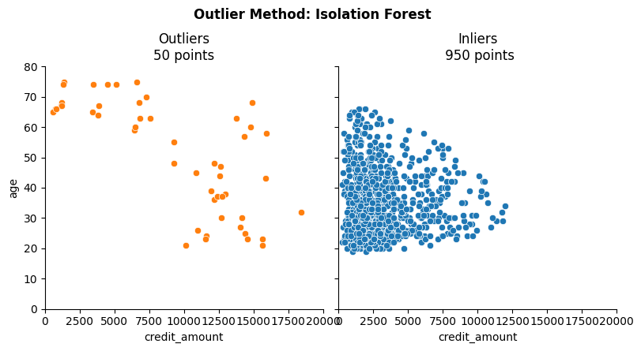
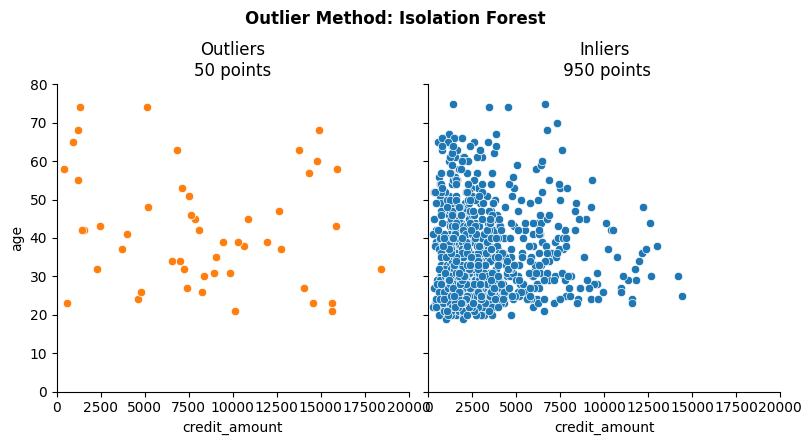
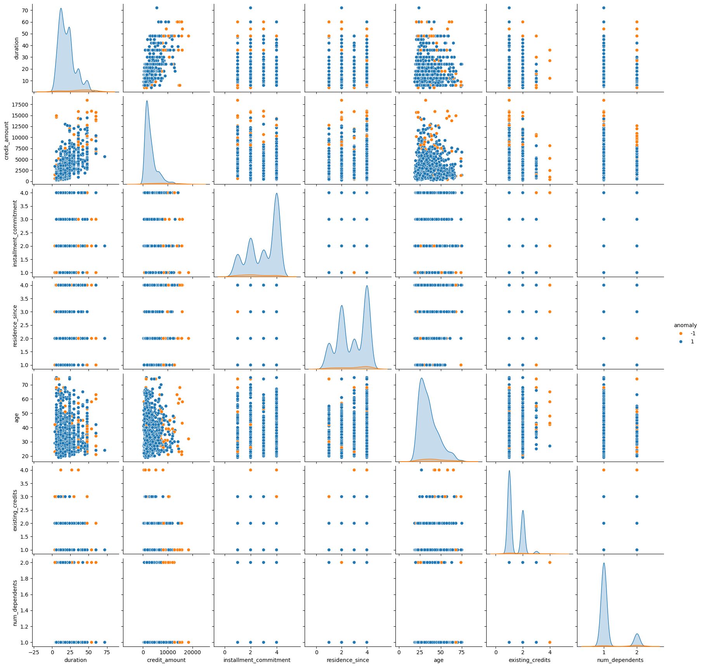

Clustering: Isolation Forest Visualzation Use Case¶
Based on Andy McDonald’s work (YouTube: Andy McDonald).
Importing Libraries & Data¶
The idea is that anomalies are few and different, so the Isolation Forest algorithm isolates anomalies instead of profiling normal data points. It does this by randomly selecting a feature and then randomly selecting a split value between the maximum and minimum values of the selected feature. The number of splits required to isolate a point is the anomaly score, with lower scores indicating anomalies.
[17]:
import pandas as pd
import numpy as np
import seaborn as sns
from sklearn.ensemble import IsolationForest
[2]:
df = pd.read_csv(r'/Users/davidtbo/Library/Mobile Documents/com~apple~CloudDocs/data/external/german_credit.csv')
[3]:
df.describe()
[3]:
| duration | credit_amount | installment_commitment | residence_since | age | existing_credits | num_dependents | |
|---|---|---|---|---|---|---|---|
| count | 1000.000000 | 1000.000000 | 1000.000000 | 1000.000000 | 1000.000000 | 1000.000000 | 1000.000000 |
| mean | 20.903000 | 3271.258000 | 2.973000 | 2.845000 | 35.546000 | 1.407000 | 1.155000 |
| std | 12.058814 | 2822.736876 | 1.118715 | 1.103718 | 11.375469 | 0.577654 | 0.362086 |
| min | 4.000000 | 250.000000 | 1.000000 | 1.000000 | 19.000000 | 1.000000 | 1.000000 |
| 25% | 12.000000 | 1365.500000 | 2.000000 | 2.000000 | 27.000000 | 1.000000 | 1.000000 |
| 50% | 18.000000 | 2319.500000 | 3.000000 | 3.000000 | 33.000000 | 1.000000 | 1.000000 |
| 75% | 24.000000 | 3972.250000 | 4.000000 | 4.000000 | 42.000000 | 2.000000 | 1.000000 |
| max | 72.000000 | 18424.000000 | 4.000000 | 4.000000 | 75.000000 | 4.000000 | 2.000000 |
[4]:
df.info()
<class 'pandas.core.frame.DataFrame'>
RangeIndex: 1000 entries, 0 to 999
Data columns (total 21 columns):
# Column Non-Null Count Dtype
--- ------ -------------- -----
0 checking_status 1000 non-null object
1 duration 1000 non-null int64
2 credit_history 1000 non-null object
3 purpose 1000 non-null object
4 credit_amount 1000 non-null int64
5 savings_status 1000 non-null object
6 employment 1000 non-null object
7 installment_commitment 1000 non-null int64
8 personal_status 1000 non-null object
9 other_parties 1000 non-null object
10 residence_since 1000 non-null int64
11 property_magnitude 1000 non-null object
12 age 1000 non-null int64
13 other_payment_plans 1000 non-null object
14 housing 1000 non-null object
15 existing_credits 1000 non-null int64
16 job 1000 non-null object
17 num_dependents 1000 non-null int64
18 own_telephone 1000 non-null object
19 foreign_worker 1000 non-null object
20 class 1000 non-null object
dtypes: int64(7), object(14)
memory usage: 164.2+ KB
[5]:
df = df.dropna()
[6]:
df.info()
<class 'pandas.core.frame.DataFrame'>
RangeIndex: 1000 entries, 0 to 999
Data columns (total 21 columns):
# Column Non-Null Count Dtype
--- ------ -------------- -----
0 checking_status 1000 non-null object
1 duration 1000 non-null int64
2 credit_history 1000 non-null object
3 purpose 1000 non-null object
4 credit_amount 1000 non-null int64
5 savings_status 1000 non-null object
6 employment 1000 non-null object
7 installment_commitment 1000 non-null int64
8 personal_status 1000 non-null object
9 other_parties 1000 non-null object
10 residence_since 1000 non-null int64
11 property_magnitude 1000 non-null object
12 age 1000 non-null int64
13 other_payment_plans 1000 non-null object
14 housing 1000 non-null object
15 existing_credits 1000 non-null int64
16 job 1000 non-null object
17 num_dependents 1000 non-null int64
18 own_telephone 1000 non-null object
19 foreign_worker 1000 non-null object
20 class 1000 non-null object
dtypes: int64(7), object(14)
memory usage: 164.2+ KB
Building an Isolation Forest Model (2 Features)¶
[22]:
anomaly_inputs = ['credit_amount', 'age']
[29]:
model_IF = IsolationForest(contamination=0.05, random_state=42)
[30]:
model_IF.fit(df[anomaly_inputs])
[30]:
IsolationForest(contamination=0.05, random_state=42)In a Jupyter environment, please rerun this cell to show the HTML representation or trust the notebook.
On GitHub, the HTML representation is unable to render, please try loading this page with nbviewer.org.
Parameters
| n_estimators | 100 | |
| max_samples | 'auto' | |
| contamination | 0.05 | |
| max_features | 1.0 | |
| bootstrap | False | |
| n_jobs | None | |
| random_state | 42 | |
| verbose | 0 | |
| warm_start | False |
[ ]:
df['anomaly_scores'] = model_IF.decision_function(df[anomaly_inputs]) # <0 is an outlier, >0 is an inlier
[32]:
df['anomaly'] = model_IF.predict(df[anomaly_inputs])
[33]:
df.loc[:, ['credit_amount', 'age','anomaly_scores','anomaly'] ]
[33]:
| credit_amount | age | anomaly_scores | anomaly | |
|---|---|---|---|---|
| 0 | 1169 | 67 | -0.004742 | -1 |
| 1 | 5951 | 22 | 0.040490 | 1 |
| 2 | 2096 | 49 | 0.117143 | 1 |
| 3 | 7882 | 45 | 0.051116 | 1 |
| 4 | 4870 | 53 | 0.041043 | 1 |
| ... | ... | ... | ... | ... |
| 995 | 1736 | 31 | 0.176705 | 1 |
| 996 | 3857 | 40 | 0.147507 | 1 |
| 997 | 804 | 38 | 0.129526 | 1 |
| 998 | 1845 | 23 | 0.151174 | 1 |
| 999 | 4576 | 27 | 0.144148 | 1 |
1000 rows × 4 columns
[34]:
def outlier_plot(data, outlier_method_name, x_var, y_var,
xaxis_limits=[0,1], yaxis_limits=[0,1]):
print(f'Outlier Method: {outlier_method_name}')
method = f'{outlier_method_name}_anomaly'
print(f"Number of anomalous values {len(data[data['anomaly']==-1])}")
print(f"Number of non anomalous values {len(data[data['anomaly']== 1])}")
print(f'Total Number of Values: {len(data)}')
g = sns.FacetGrid(data, col='anomaly', height=4, hue='anomaly', hue_order=[1,-1])
g.map(sns.scatterplot, x_var, y_var)
g.fig.suptitle(f'Outlier Method: {outlier_method_name}', y=1.10, fontweight='bold')
g.set(xlim=xaxis_limits, ylim=yaxis_limits)
axes = g.axes.flatten()
axes[0].set_title(f"Outliers\n{len(data[data['anomaly']== -1])} points")
axes[1].set_title(f"Inliers\n {len(data[data['anomaly']== 1])} points")
return g
[35]:
outlier_plot(df, 'Isolation Forest', 'credit_amount', 'age', [0, 20000], [0, 80]);
Outlier Method: Isolation Forest
Number of anomalous values 50
Number of non anomalous values 950
Total Number of Values: 1000

Building an Isolation Forest Model Using Multiple Features¶
[38]:
anomaly_inputs = ['duration','credit_amount','installment_commitment','residence_since','age','existing_credits','num_dependents']
[39]:
anomaly_inputs = ['duration','credit_amount','installment_commitment','residence_since','age','existing_credits','num_dependents']
model_IF = IsolationForest(contamination=0.05, random_state=42)
model_IF.fit(df[anomaly_inputs])
df['anomaly_scores'] = model_IF.decision_function(df[anomaly_inputs])
df['anomaly'] = model_IF.predict(df[anomaly_inputs])
[40]:
outlier_plot(df, 'Isolation Forest', 'credit_amount', 'age', [0, 20000], [0, 80]);
Outlier Method: Isolation Forest
Number of anomalous values 50
Number of non anomalous values 950
Total Number of Values: 1000

[41]:
palette = ['#ff7f0e', '#1f77b4']
sns.pairplot(df, vars=anomaly_inputs, hue='anomaly', palette=palette)
[41]:
<seaborn.axisgrid.PairGrid at 0x14e14be00>
